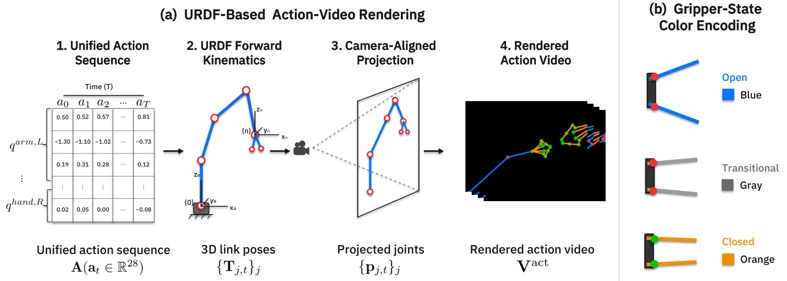
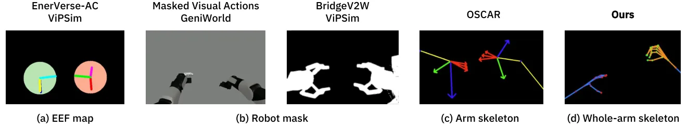
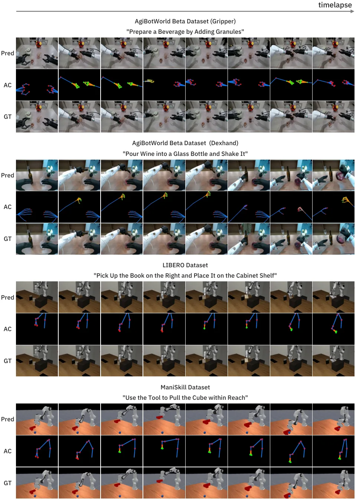
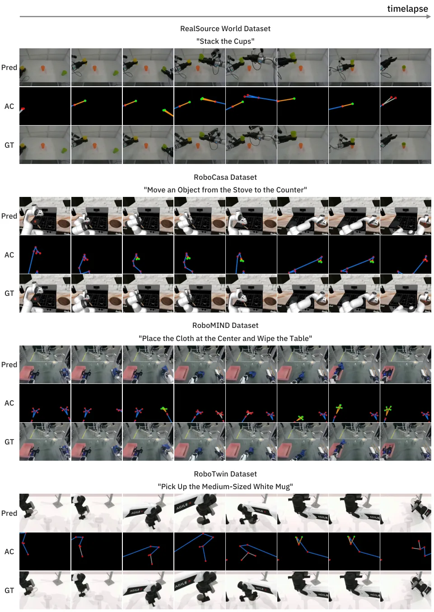
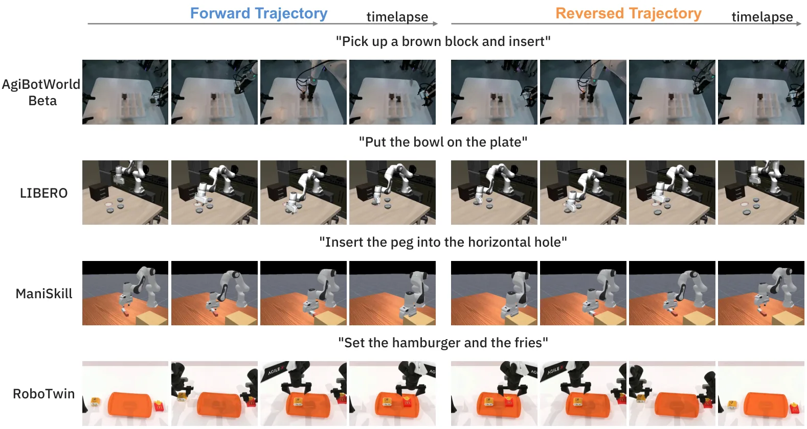

Pelican-Sim 1.0：面向具身智能的通用世界模型模拟器Pelican-Sim 1.0: A General World Model Simulator for Embodied Intelligence
A 级 robotic foundation model / world model，直接连接空间表征、动作条件预测与具身策略闭环。
一句话工作总结
这是一项从 3D/动作表征走向具身决策的世界模型工作：关键不是只生成逼真视频，而是让动作条件能被策略训练和评估实际使用。最值得迁移的是 URDF/相机渲染的 action-visual injection、跨 embodiment 的统一动作空间和低步数 rollout；具体收益仍应在目标机器人上复现。
半海报（待补全）
当前记录尚未达到完整海报质量门槛，暂不把摘要或评分理由冒充方法/实验结论。
待补字段：研究上下文.lineage（至少 2 条实质条目）、研究上下文.network（至少 2 条实质条目）。下一次任务需从论文全文或官方 HTML 提取证据后再发布。
摘要
Pelican-Sim 1.0 从视觉上下文和机器人动作预测未来观测，统一数值动作与渲染动作视频，并用稀疏 MoE 和四步因果蒸馏提升跨 embodiment 的可控性与 rollout 效率。论文在约一百万条真实/仿真轨迹上训练，并报告了生成质量、数据增强、策略评估、动作选择和策略改进结果。
In this technical report, we propose Pelican-Sim 1.0, a general world model simulator for embodied intelligence that predicts future observations from visual context and robot actions to support downstream learning and decision making. The model incorporates four key design features: (1) Unified action representation: a 28-dimensional action value space covering most mainstream embodiments, keeping one model valid across heterogeneous devices. (2) Action-visual injection: URDF- and camera-rendered action videos bridge actions and pixels, giving markedly better controllability across embodiments, scenes, and tasks (PSNR +0.904 over alternative fusion baselines). (3) Sparse mixture-of-experts (MoE): sparse MoE layers add capacity for heterogeneous dynamics and absorb the action modality while reducing inter-modality conflict (FVD -6.530 vs. the dense backbone). (4) Efficient rollout generation: causal adaptation and few-step distillation yield a four-step autoregressive simulator, achieving a 5.67-fold speedup over the 35-step model. Benefiting from these designs, we train on approximately one million real-world and simulated trajectories and obtain large gains in action controllability and video quality: PSNR improves over the strongest evaluated baselines by 4.636 on AgiBotWorld Beta, 2.080 on RoboMIND, and 10.343 on RoboTwin, with the adapted EWMBench DYN score up 0.426 on RoboTwin. Relying on this, four downstream applications on RoboTwin succeed: 500 generated trajectories added to 50 demonstrations per task raise policy success from 70% to 93%; policy evaluation reaches a Pearson correlation of 0.994 across five checkpoints; and relative success gains reach 47.7% for action selection and 20.3% for policy improvement. Qualitative generalization across trajectory, scene, object, embodiment, and viewpoint shifts highlights its potential as a general-purpose world model simulator.
图表/页面预览

{kind=link}

{kind=link}

{kind=link}

{kind=link}

{kind=link}
